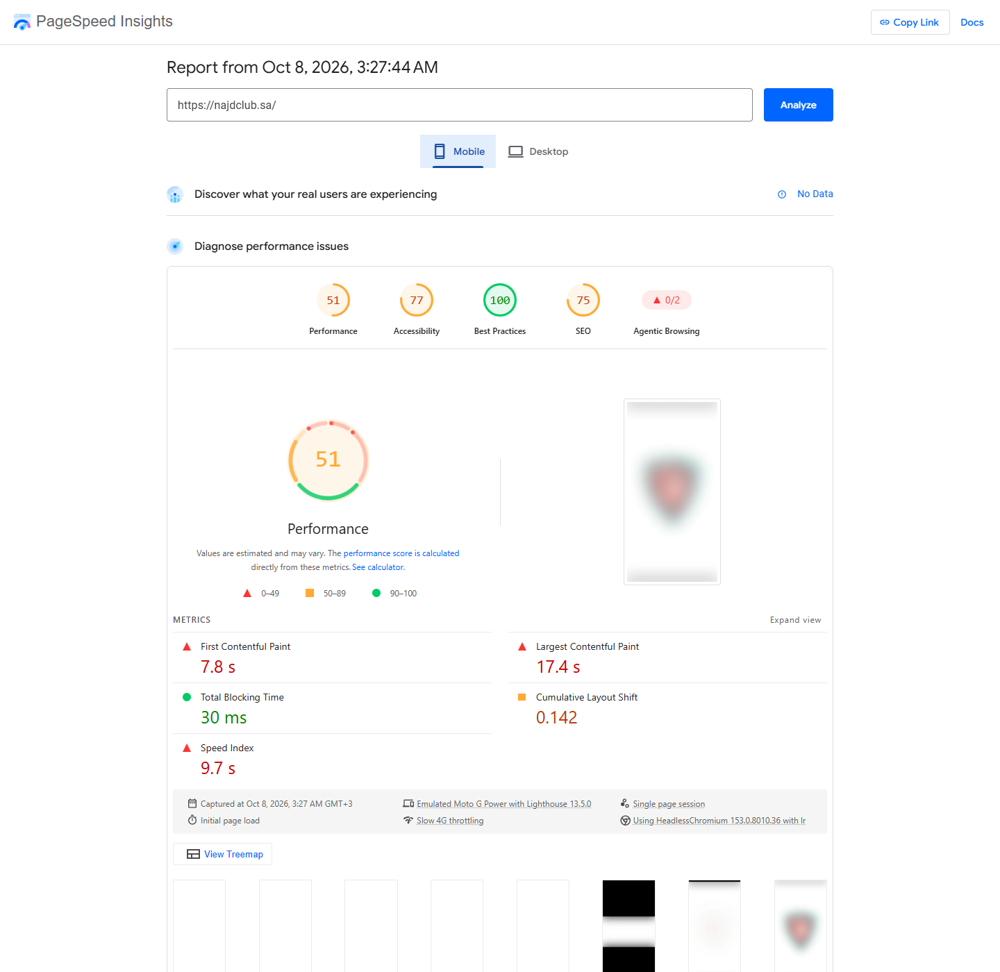
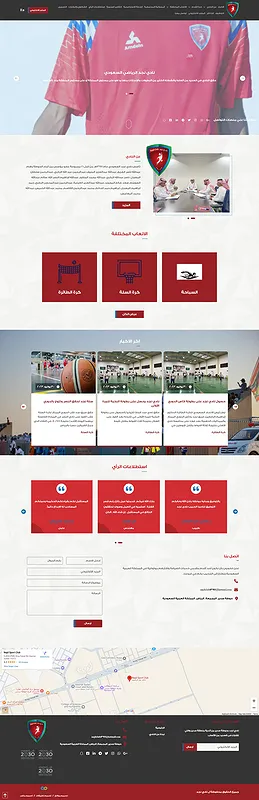
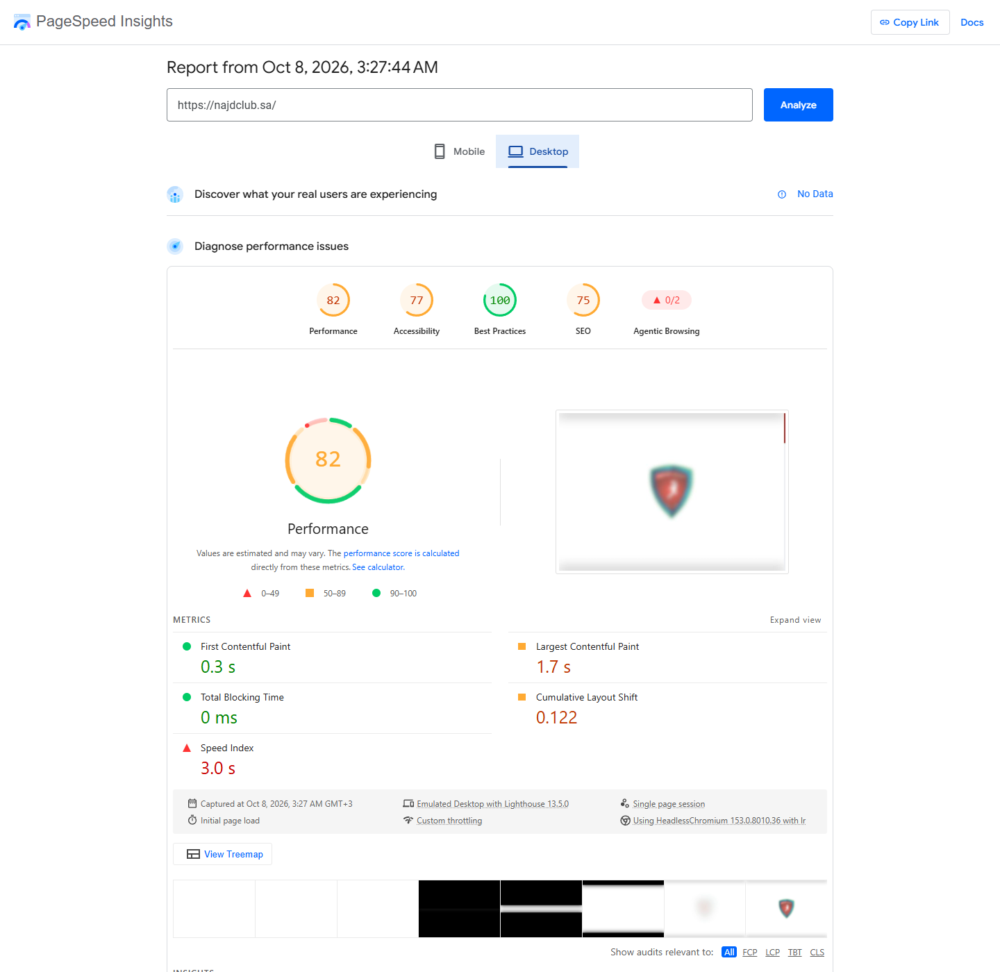

Mobile 51/100

Original reportA WordPress website presenting Najd Club and its activities.

A WordPress website presenting Najd Club and its activities.
WordPress
The linked page and project preview show the delivered work. Detailed delivery timings are not available for this earlier project; recorded performance evidence is provided below.
PageSpeed lab measurements dated 8 October 2026 for the URL shown in the report. The version may include later client changes. These scores are not a guarantee for every page or a before/after optimization comparison.

Original report
Original reportHave a design, a business idea, or a website that needs help? Let’s talk.